Lab 4
Objective:
In this lab, I extract and compute rapid, reliable data from a 3-axis Inertial Measurement Unit (IMU). Putting this sensor together with the TOF sensors from lab 3 and an RC vehicle, I collect, relay, and visualize accelerometer, gyroscope, and TOF data.
IMU Setup
The IMU chip is a ICM-20948, mounted on a Sparkfun breakout board. It is connected to the Artemis via a single Qwiic cable. The board's arduino library comes with example scripts to print its accelerometer, gyrosocpe, and magnetometer data over serial. Isolating the accelerometer (X, Y, Z) and gyroscope (X, Y, Z) respectively, I verified the example code works by tracking live movements of the board as follows:
The accelerometer visualization resembles the motion of the IMU very intuitively. As the board increases speed in an axis, the plot for that axis rises to a maxima. After the midpoint, as the board slows to a stop, the plot goes negative and reaches a minima. When the board is flipped, the acceleration due to Earth is naturally inverted, and the plot follows, without changes to the other plots. As the board is spun laterally, there is likewise no change, as the accelerometer does not measure a change in angle per unit time. This is instead the job of the gyroscope, whose visualization is far more chaotic and less intuitive to the motion of the IMU. We notice even the IMU at rest causes small fluctuations in all gyroscope measures. We notice motion along axes doesn't affect any these measures, but rotation about each axis causes a corresponding increase/decrease in its plot based on the speed of rotation.
In the example script, we note AD0_VAL is initialized as 1. This is as per the default described in the datasheet for the IMU chip for when the ADR jumper is not closed. As we were not to physically alter this pin, this default is accurate.
In order to identify when the Artemis is starting up, or has unexpected restarted, I added a start-up sequence: three blinks, with a period of 1 second.
Accelerometer
To determine the accuracy of the accelerometer, I placed it along the axis of a square box sitting on a flat table. Amending the example code to visualize pitch and roll, I substituted formulae from lecture as follows:
As evident by the plot of the roll and pitch, the formulae are sound and the accelerometer values are reasonably accurate, but suffer from a degree of noise. The unequal error on the positive and negative ends of both roll and pitch (90 and -90 degrees) is also likely due to imperfections in the box, or my holding of the sensor. As below, the following errors are all slightly different and noisy, around +/- 1.5 degrees, and thus cannot be treated as a systematic error and corrected with two-point calibration. The first two screenshots are with the box at extreme pitches, the next two are extreme rolls. At 0 roll and pitch we have a similarly noisy readings, as seen in the video.
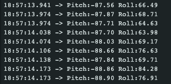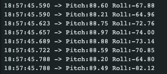
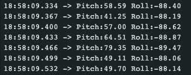
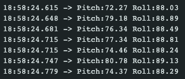
To explore the noise, I collected multiple 1-second windows of pitch and roll data, sent it over BLE to a Jupyter Notebook, and conducted fast fourier transforms. Transforming from time domain to frequency domain identified that the frequency with the most noise was around 0.15Hz, without any notable spikes at frequencies up to 100Hz (half the sampling frequence of 200Hz). This is aligned with the 'low-noise mode' default low pass filter described in the datasheet. The code for both devices involved in the FFT is below, and the graphs for pitch and roll below have been zoomed into the relevant sections:
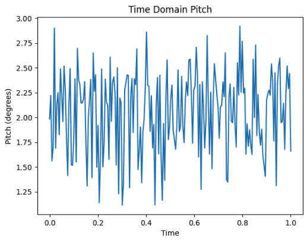
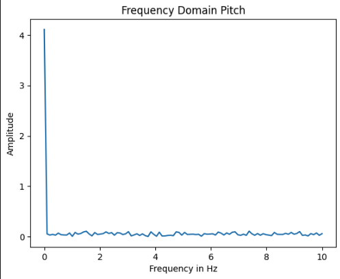
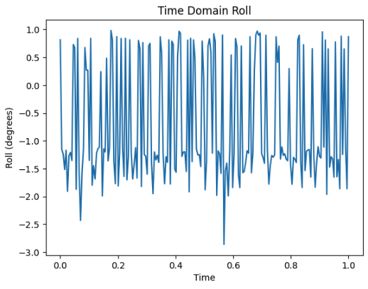
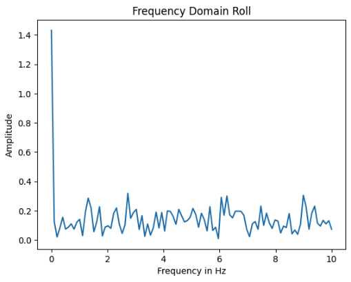
Gyroscope:
Having concluded exploration of the accelerometer, the propsect of using gyroscope data to augment and improve accelerometer data was expored. In order to compare the angles measured by both, pitch and roll needed to be derived from the gyroscopes measured change in angle per unit time, and sent alongside accelerometer angles for visualization. The gyroscope also gives us an additional stream of data incapable of being recorded by the accelerometer: yaw.
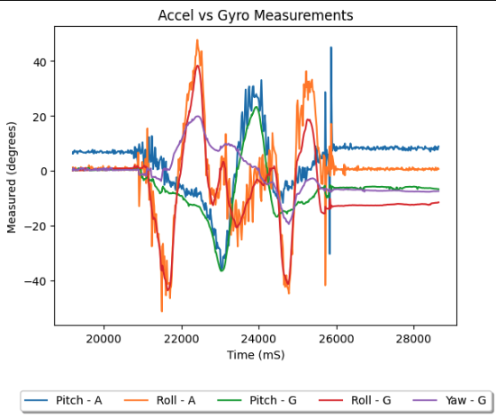
From this graph we make some important observations. Both the pitch and roll for both sensors are nearly identical, however, the accelerometer's readings appear significantly noisier. Sampling was done at the same rate for both sensors, hence we know this is not a function of the accelerometer having less datapoints. We also notice that although both values begin identical, the gyroscope values gradually drift from the acclerometer values, and end separated by about 5 degrees. This is drift over the course of 10 seconds, suggesting longer reading durations would lead to more pronounced drift. All sampling frequencies resulted in very similar data (hence not presented).
Fusing the accelerometer and the gyroscope using a complementary filter, we get smooth readings that suffer far less to drift and sudden motions. In the plots below we experiment with first moving the sensor gently, then with abrupt quick motions between bound extremes, to demonstrate its resilience and range in both situations:
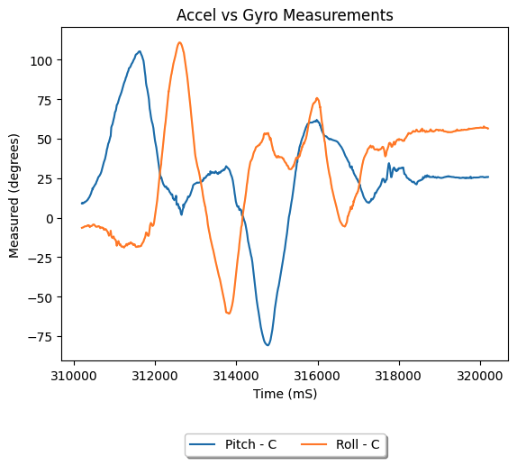
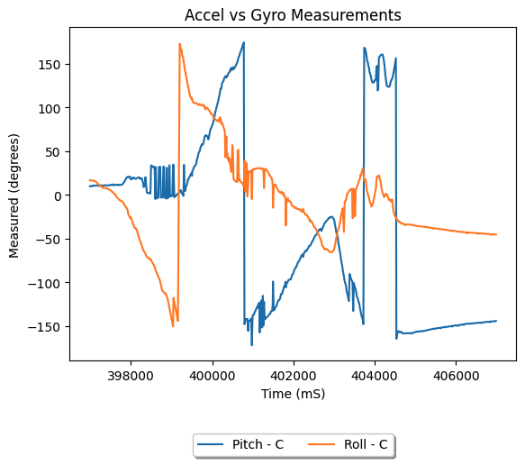
Sampling:
To be useful in a robot, the sensor data must be acquired, relayed, and processed in as rapid and reliable a manner as possible. To do so with the IMU, I used the dataReady() method of the IMU chip class. With it, the main loop of the Artemis continues running until a reading is prepared by the chip, at which point the complimentary filtered pitch, roll, and gyroscope yaw are retreived and sent over bluetooth. This prevents blocking the system from conducting other tasks. The script below allowed IMU samples to be taken and sent every ~16 milliseconds on average (61Hz), as demonstrated by the properties of the timestamps received by the Jupyter Notebook over 10 seconds.
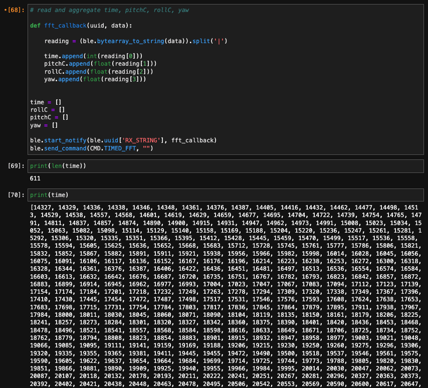
The 4 arrays holding the time, pitch, roll, and yaw post processing in the Notebook are as follows:
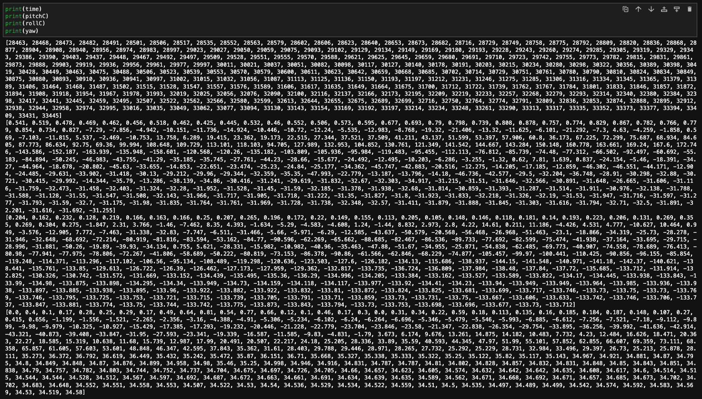
Fianlly, we combine this input stream from the IMU with the streams from the two TOF sensors of lab 3. While we aggregate the data for each bluetooth update, each sensor stream embedded within an update need not be taken synchronously, and thus the loop is never blocked waiting on a sensor. Because of this, while the data will be parsed separately, sending as a single frame makes sense for visualization - ensuring each stream has the same number of data points and apparent sampling rate, making post-processing easier. While this means an individual timestamp may contain some slightly older data, this is better than stalling active streams for a single slower sensor. Below is the main loop script, and the video and results of running the complete script with all three sensors attached. Notice the graphs are seaprated due to distinct measurement units, but the 5 second timestamp window is identical.
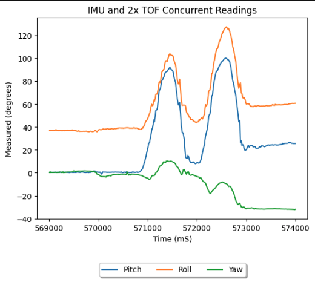
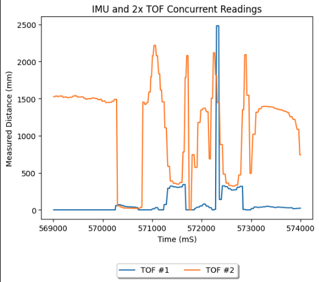
Battery:
We were given two kinds of 3.7V batteries for the project, one higher with 25C discharge and two lower capacity. Naturally, we use the higher capacity battery to drive the vehicle, as (most) motors demand much more power than microcontrollers and a few sensors, hence draining batteries quicker.
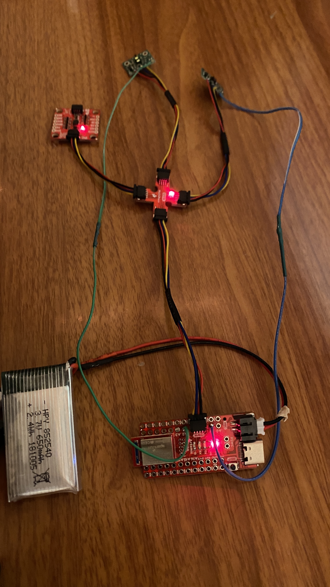
We see that while the distance from the front sensor was being uniformly increased, the proximity to my bed and a walkway caused the other TOF to read varying distances, again very precisely within the aforementioned range. In order to account for the additional TOF sensor, I simply amended the script read, send, and parsing scripts on both ends as follows:
Stunts:
Putting everything together, I taped the TOF sensors and IMU, the Artemis and its 650mAh battery, and the 850mAh battery to the black side of the RC car. I mounted one TOF looking forward, and one pointing out to the left from between the wheels. I mounted the IMU towards the frot of the car, on the flatter portion of the hood. Finally, I placed the Artemis on the battery and mounted it near the rear of the vehicle. All TOFs had a clear line of sight, the IMU was as flat as possible, and all the wires were kept clear of the wheels.

Driving around, I determined the vehicle had a slight left drift tendency, and often seemed to continue a command for longer than the button was pressed. It also bounced quite aggressively off walls on impact. Floor surface did not seem to have a major impact. I also slightly rearranged my mountings when I relaised how easily the car flipped.
This all informed my decision to pursue a stunt by accelerating then suddenly reversing the direction of wheel spin - causing unpredicatble and chaotic somersaulting. I figured that if I can collect reasonably accurate data in such a situation, the sensors would hold up in any condition. In the chosen run below, I landed on the left wheels of the vehicle, with the left-side TOF looking at the ground, and the front mounted TOF looking at the closet door. Given there was also wall contact during the aggressive flipping, I determined this was the ideal run to analyze the data of.
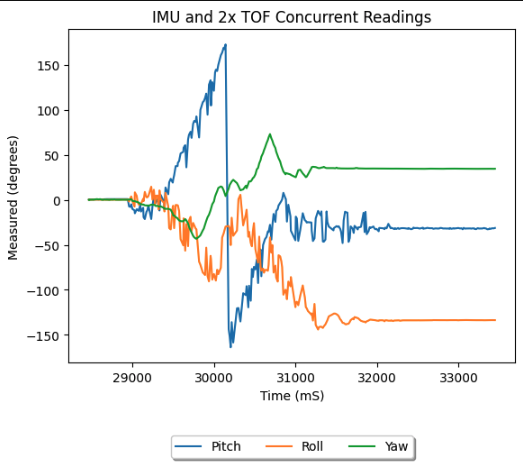
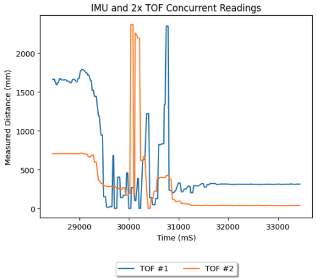
Looking at the IMU data, we realize the multiple flips of the car were not well captured. I believe this is because the sampling frequnecy was not high enough to capture the movements. We see at least one flip clearly, as the pitch of the vehicle rises from nominal, through inversion, and back to nominal. We also see the vehicle's roll plot roughly follow that experienced through the flips, and capture the sideways final position. The yaw is also reasonable as the final yaw of the vehicle appears around 60 degreees counterclockwise from initial. The TOF data captures the sensors reading the floor, the high ceiling, and the (closer) sides of the walkway through the chaotic flipping. It also gets the final position of the vehicle very accurately, as TOF #2, the TOF mounted leftwards, is looking straight into the ground, while TOF #1 looks a little further towards the closet door.